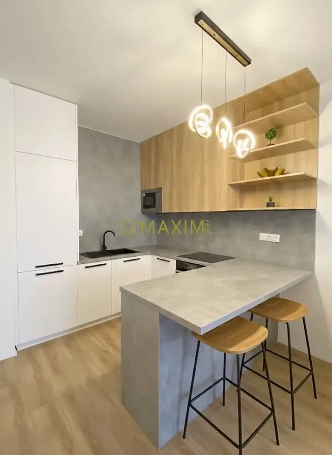
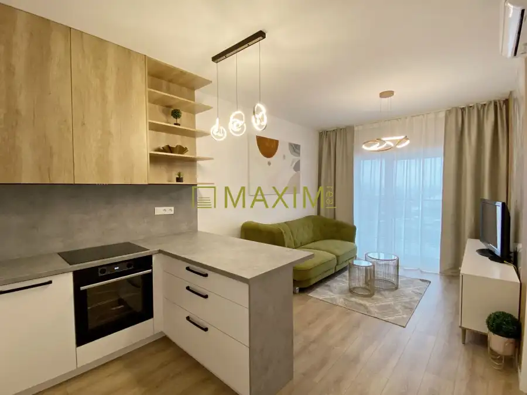
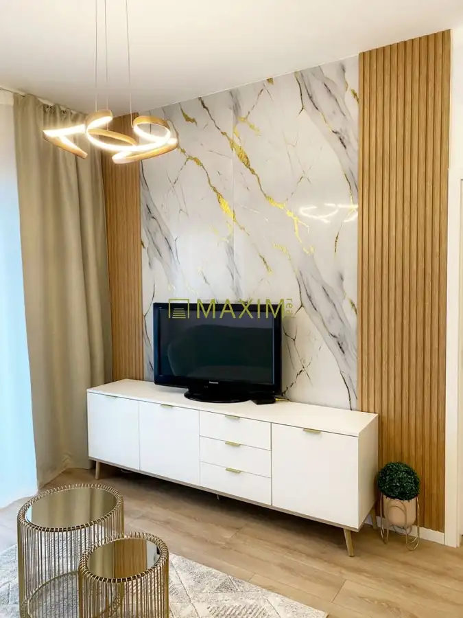
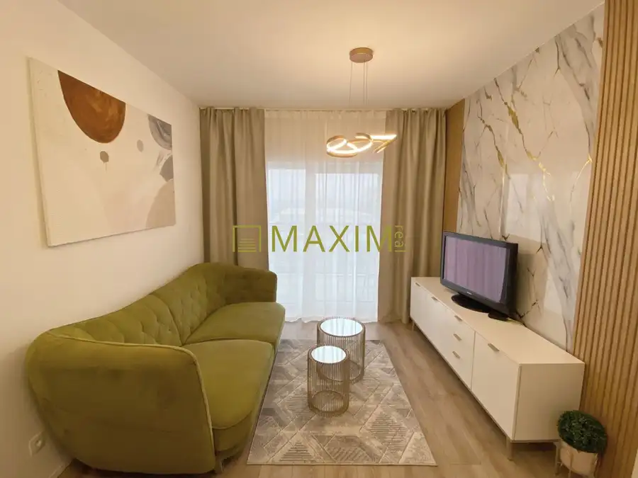
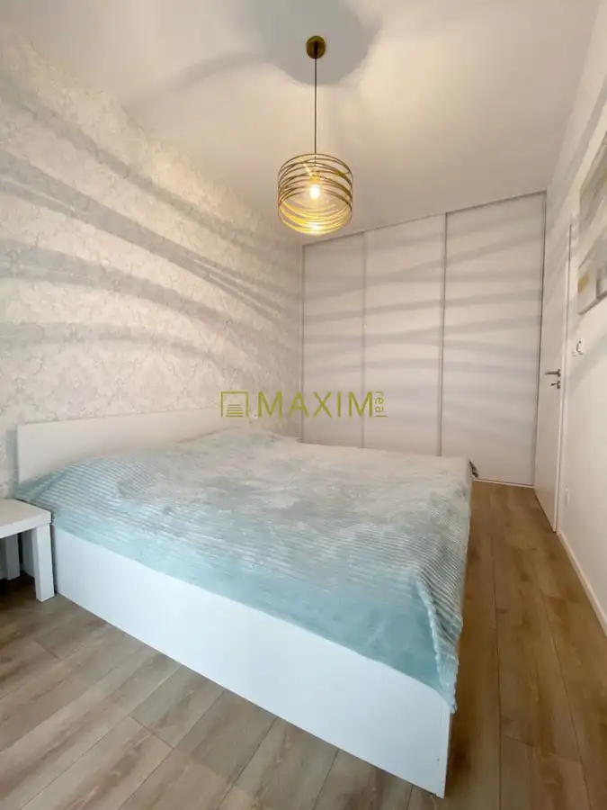
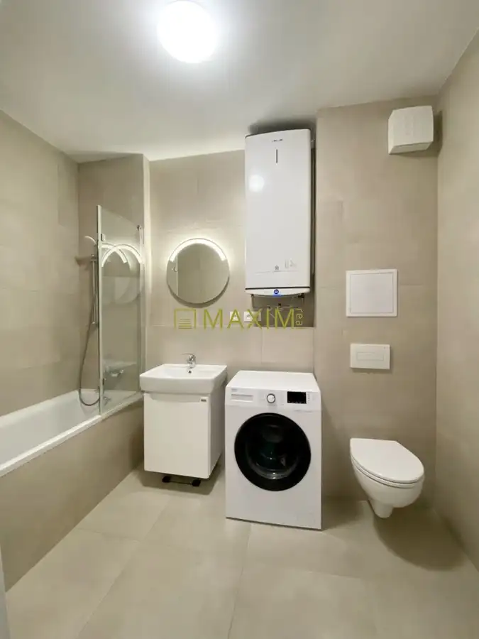
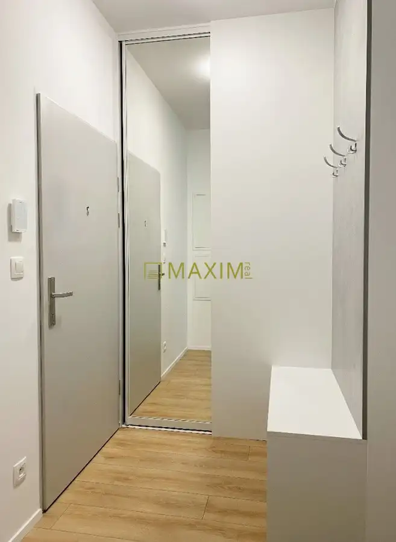

Moderný 2-izbový byt s terasou a parkovaním
Podunajské Biskupice, Bratislava







- Dispozícia2-izbový
- Plocha54 m²
- Poschodie4. z 5
- StavNovostavba
- VlastníctvoOsobné
O nehnuteľnosti
Hľadáte štýlové bývanie, kde si rannú kávu vychutnáte na priestrannej terase? Ponúkame na prenájom 2-izbový byt v novostavbe na ulici Svornosti. Byt kombinuje moderný dizajn, vysoký štandard a maximálny komfort. Byt sa nachádza na 4. nadzemnom podlaží a disponuje celkovou plochou 54 m². Interiér s rozlohou 43 m² tvorí presvetlená obývacia izba spojená s kuchyňou, samostatná spálňa, predsieň a moderná kúpeľňa s WC.Vybavený je modernými technológiami, ktoré zaručujú pohodlie v každom ročnom období. V celom byte je inštalované podlahové vykurovanie s vlastným termostatom v každej izbe, čo umožňuje individuálnu reguláciu tepla. Počas letných mesiacov oceníte výkonnú klimatizáciu, ktorá udrží v interiéri príjemnú teplotu.K bytu patrí veľkorysá terasa s rozlohou 11 m², ktorá je prístupná z oboch hlavných izieb a poskytuje ideálny priestor pre váš relax. Veľkým benefitom je vyhradené parkovacie miesto priamo pri objekte, ktoré je už zahrnuté v cene.Projekt bytový dom Svornosti ponúka výbornú dostupnosť do mesta aj na diaľničný obchvat, čím šetrí váš čas. V blízkosti nájdete kompletnú občiansku vybavenosť.Cena: 850 € / mesiac (vrátane energií a parkovacieho miesta)Kontakt: Lucia Horváthová Telefón: 0907 501 750 Email: horvathova@maximreal.sk
Parametre
- Cena vrátane energií
- Nie
- Druh
- 2 izbový byt
- Dátum zverejnenia
- 07. 10. 2026
- Energetický certifikát budovy
- nie je
- Podlažie
- 4
- Počet nadzemných podlaží
- 5
- Rok kolaudácie
- 2024
- Rok výstavby
- 2024
- Stav nehnuteľnosti
- Novostavba
- Telekomunikácie
- Káblová TV
- Typ
- Prenájom
- Typ konštrukcie
- Iná
- Umiestnenie
- Ďalšie nadzemné podlažie
- Vlastníctvo
- Osobné
- Vybavenie
- Terasa, Pivnica, Vonkajšie parkovacie miesto, Výťah
- Zariadenie
- Zariadené kompletne
- Úžitková plocha
- 54 m²